① 15-1 貨幣的概念、四大功能與演進歷程
📌 貨幣的經濟學定義：
貨幣（Money）是指在經濟社會中，為社會大眾所「共同接受（General Acceptability）」作為交易媒介的物品。俗語說「錢不是萬能，但沒錢萬萬不能」，在現代分工經濟體系中，貨幣是不可或缺的潤滑劑。
貨幣（Money）是指在經濟社會中，為社會大眾所「共同接受（General Acceptability）」作為交易媒介的物品。俗語說「錢不是萬能，但沒錢萬萬不能」，在現代分工經濟體系中，貨幣是不可或缺的潤滑劑。
一、貨幣的四大核心功能
| 功能類別 | 經濟意義與特性 | 課本實務生活範例 |
|---|---|---|
| 1. 交易媒介（最重要、最基本功能） | 作為買賣商品與勞務時的支付工具，解決物物交換中「慾望雙重一致（Double Coincidence of Wants）」的困難。 | 走進便利商店拿 35 元現金購買飯糰飲料。 |
| 2. 計價標準（價值標準 / 計價單位） | 作為衡量所有商品與勞務價值高低的共同尺度（記帳單位），大幅降低市場交易的比較成本。 | 百貨公司衣服標價「新台幣 1,200 元」、iPhone 標價「35,000 元」。 |
| 3. 延期支付標準（債權債務清償工具） | 作為未來契約清償、借貸還款或延期付款的衡量與結算標準。 | 向銀行申請房貸分 20 年按月本息攤還、購買分期付款機車。 |
| 4. 價值儲藏（財富累積工具） | 將目前的購買力保留到未來使用的工具。貨幣具備最高的流動性（Liquidity）。 | 將每個月工作賺得的薪資保留一部份存在銀行作為儲蓄。 |
💡 統測必考排雷：塑膠卡片是貨幣嗎？
• 信用卡（Credit Card）/ 簽帳金融卡（Debit Card）：統稱「塑膠貨幣」，但經濟學上並不是真正的貨幣！它們只是「先消費後付款」的延期支付信用憑證，最終結清欠款時仍須透過銀行帳戶的法定貨幣清償。
• 電子票證與電子支付（悠遊卡、一卡通、街口支付儲值金）：屬於「電子貨幣」，是將實質法定貨幣以電子數據形式儲存，方便小額零售交易。
• 信用卡（Credit Card）/ 簽帳金融卡（Debit Card）：統稱「塑膠貨幣」，但經濟學上並不是真正的貨幣！它們只是「先消費後付款」的延期支付信用憑證，最終結清欠款時仍須透過銀行帳戶的法定貨幣清償。
• 電子票證與電子支付（悠遊卡、一卡通、街口支付儲值金）：屬於「電子貨幣」，是將實質法定貨幣以電子數據形式儲存，方便小額零售交易。
二、貨幣的演進與格雷欣法則（Gresham's Law）
- 1. 商品貨幣時期：以貝殼、小麥、絲帛、牛、酒等具使用價值的物品充當媒介，但有不易攜帶、難以分割、易腐損的缺點。
- 2. 金屬貨幣時期：金、銀、銅具質地均勻、易分割、便於攜帶與耐久特性，發展出鑄幣。
★ 格雷欣法則（劣幣驅逐良幣，Bad money drives out good）：
當社會同時流通「面額相同但實際金屬價值不同」的兩種金屬鑄幣時，大眾會將金屬成色高或重量足的「良幣」收藏、鎔鑄或運往國外，而將金屬成色不足或磨損嚴重的「劣幣」用於市場交易流通。長久之下，市面上只剩下劣幣流通！ - 3. 信用貨幣時期：由政府或中央銀行發行、以國家信用為擔保之不兌現紙幣（Fiat Money）與商業銀行存款貨幣。
三、貨幣的法律分類（主幣 vs 輔幣）
| 分類維度 | 本位貨幣（主幣，Standard Money） | 輔幣（Fractional Currency） |
|---|---|---|
| 主從地位 | 一國貨幣的基本單位（我國為「圓/元」） | 主幣以下的小額找零貨幣（如 1元、5元、10元、50元硬幣） |
| 法償效力 | 無限法償（Legal Tender）：法律規定任何交易，收款人不得拒絕接受，拒收違法。 | 有限法償：在法定特定限額內具法償效力，若超過法定限額，收款人依法可拒絕收受。 |
② 15-2-1 貨幣供給體系與台灣三層次定義（M1A、M1B、M2）
貨幣供給量（Money Supply, MS）是指在某一個特定時間點，一國全體經濟體系中所流通的貨幣總額，屬於「存量（Stock）」概念。
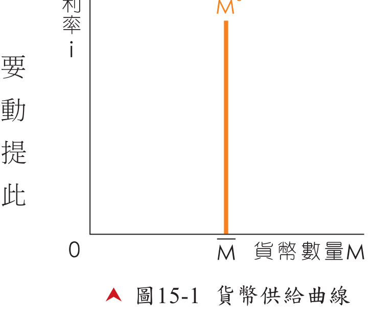
▲ 圖 15-1 貨幣供給曲線：由中央銀行獨立調控，不受市場利率高低影響，呈現垂直線！
一、台灣中央銀行貨幣供給量三大層次（俄羅斯娃娃體系）
🟢 M2（廣義貨幣供給量 / 最外層大娃娃）
M2 ＝ M1B ＋ 準貨幣（Quasi-Money）
🟡 M1B（狹義貨幣供給量 / 股市資金活水動能觀察指標）
M1B ＝ M1A ＋ 活期儲蓄存款（個人及非營利團體開立之活儲）
🔴 M1A（最狹義貨幣供給量 / 純交易媒介 / 最內層小娃娃）
M1A ＝ 通貨淨額 ＋ 支票存款 ＋ 活期存款（主要為企業開立）
二、核心名詞公式與組成定義
- 通貨淨額：＝ 央行發行通貨總額 － 各商業銀行金庫庫存現金。
- 存款貨幣：＝ 支票存款 ＋ 活期存款 ＋ 活期儲蓄存款。故：M1B ＝ 通貨淨額 ＋ 存款貨幣。
- 準貨幣（Quasi-Money）：指變現性較高、可在短時間內轉換為現金但不能直接簽發支票或購物的金融資產。包含：定期存款、定期儲蓄存款、外匯存款、郵政儲金、外國人新台幣存款、附買回交易餘額、貨幣市場共同基金等。
三、統測終極排雷：帳戶轉換對 M1A、M1B、M2 變動題型
| 資金轉移操作情境 | M1A 變動 | M1B 變動 | 準貨幣變動 | M2 變動 | 考題核心解析指引 |
|---|---|---|---|---|---|
| 小陳將定期存款（40萬）轉為活期儲蓄存款 | 不變 | 增加 ↑ | 減少 ↓ | 不變 | 資金在 M2 內部流轉，總量不變；活儲增加使 M1B 增加。 |
| 甲公司將支票存款（100萬）轉存為定期存款 | 減少 ↓ | 減少 ↓ | 增加 ↑ | 不變 | 支存屬 M1A/M1B，轉入定存使 M1A、M1B 萎縮，M2 總額不變。 |
| 乙公司將外匯存款（50萬）解約轉為活期存款 | 增加 ↑ | 增加 ↑ | 減少 ↓ | 不變 | 外匯存款為準貨幣，轉成活存使 M1A、M1B 上升。 |
| 小張將活期儲蓄存款（10萬）提領為現金紙鈔持有 | 增加 ↑ | 不變 | 不變 | 不變 | 通貨淨額增加使 M1A 增加；但提領同額活儲，兩者在 M1B 內相抵，M1B 不變！ |
③ 15-2-2 ~ 15-2-5 流動性偏好、均衡利率與流動性陷阱
📌 凱因斯貨幣需求三大動機（流動性偏好理論）：
• 交易動機（Lt）：因應日常交易支出，受所得（Y）影響，為所得的增函數。
• 預防動機（Lp）：因應突發疾病意外支出，受所得（Y）影響，為所得的增函數。
• 投機動機（Ls）：等待金融市場（債券、股票）有利時機進行買賣，受市場利率（i）影響，為利率的減函數（利率愈高，持有現金的機會成本愈大，投機貨幣需求愈小）。
• 交易動機（Lt）：因應日常交易支出，受所得（Y）影響，為所得的增函數。
• 預防動機（Lp）：因應突發疾病意外支出，受所得（Y）影響，為所得的增函數。
• 投機動機（Ls）：等待金融市場（債券、股票）有利時機進行買賣，受市場利率（i）影響，為利率的減函數（利率愈高，持有現金的機會成本愈大，投機貨幣需求愈小）。
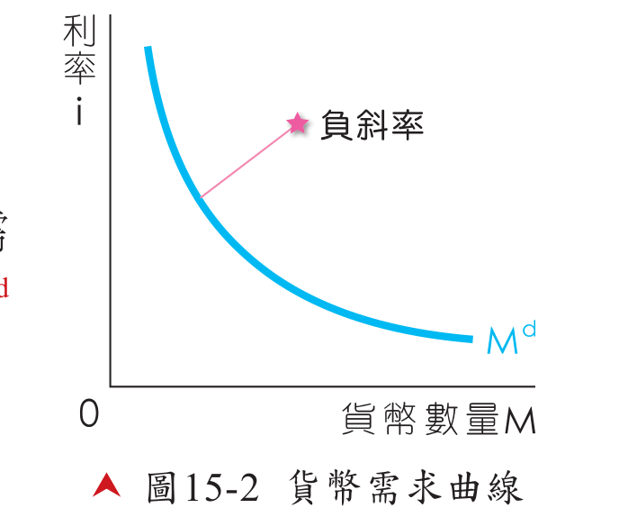
▲ 圖 15-2 貨幣需求曲線：負斜率，反映利率與貨幣需求量之反向變動
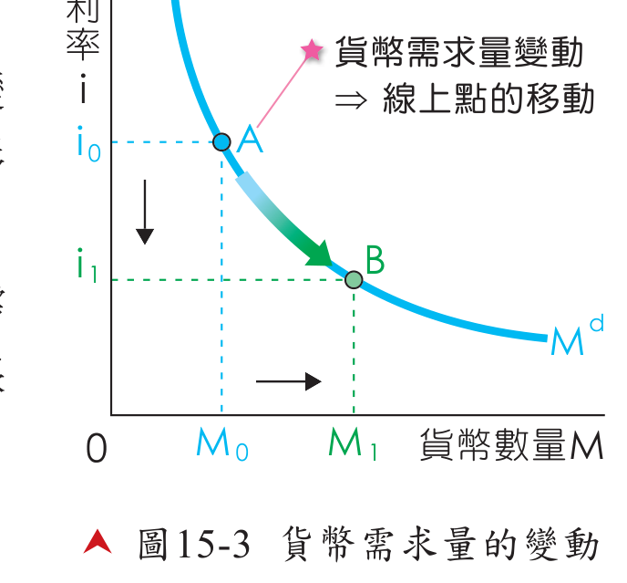
▲ 圖 15-3 需求量變動：純由「利率 i 變動」引發線上點的移動
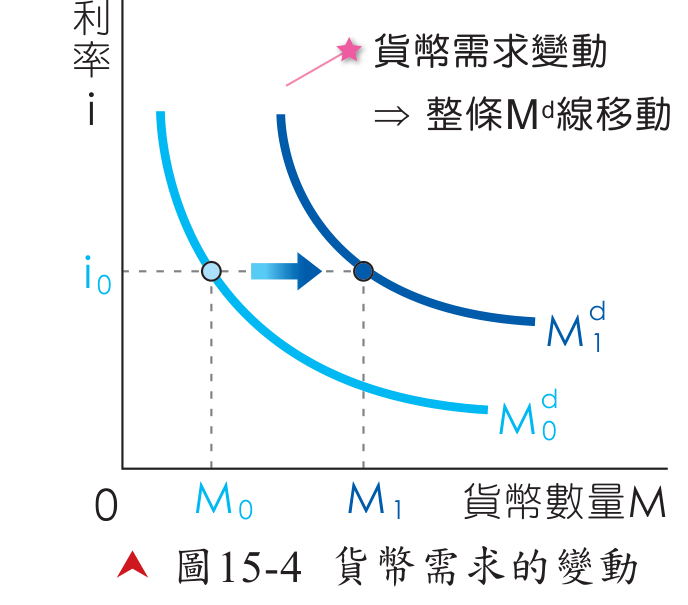
▲ 圖 15-4 需求變動：由「所得 Y 提高」或偏好增強引發整條曲線右移
一、貨幣市場均衡利率之決定與供需變動
市場均衡利率由貨幣供給線（MS）與貨幣需求線（Md）之交點 E 決定：
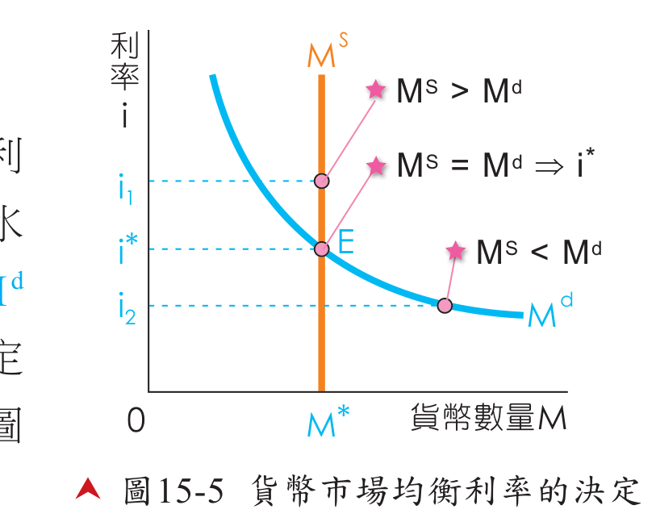
▲ 圖 15-5 均衡利率決定：MS ＝ Md 決定均衡利率 i*
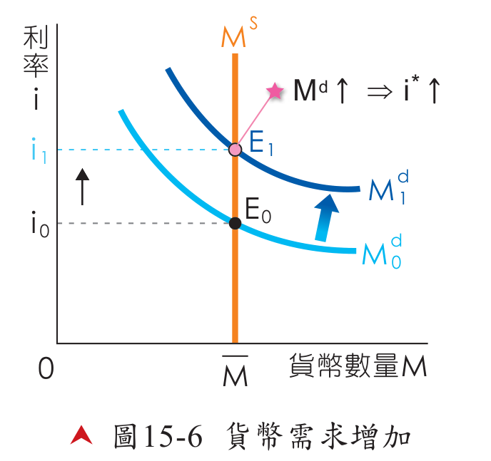
▲ 圖 15-6 需求增加：Md 右移 ➔ 利率由 i0 上升至 i1
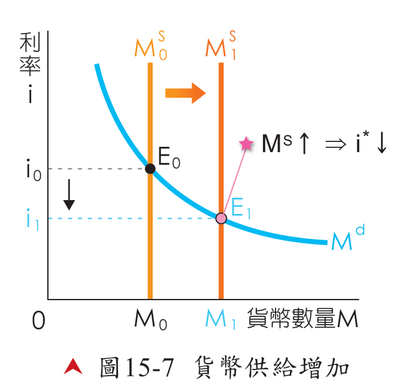
▲ 圖 15-7 供給增加：MS 右移 ➔ 利率由 i0 下降至 i1
二、流動性陷阱（Liquidity Trap，統測超熱門題型）
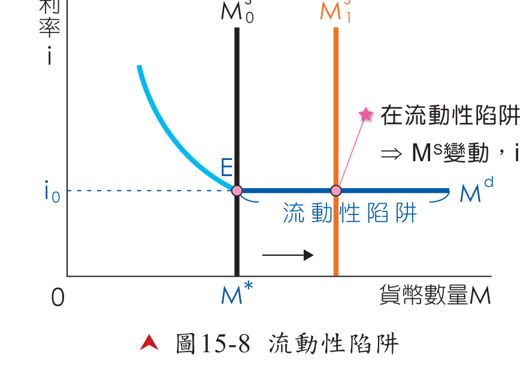
▲ 圖 15-8 流動性陷阱：當利率跌至極低點 i0，Md 曲線呈水平線，增加 MS 無法再降低利率！
★ 流動性陷阱的三大本質特徵：
1. 發生時機：市場利率降至極低水準（幾近於零）。此時債券價格處於歷史高點，大眾預期利率只會上升、債券只會下跌，寧可持有現金而不買債券。
2. 彈性特徵：貨幣需求對利率的彈性為「無窮大」，整條貨幣需求曲線呈現「水平線」！
3. 政策意涵：此時央行無論如何擴張貨幣供給（MS 右移），全數被大眾如無底洞般吸收，利率固定不變，貨幣政策完全失效！凱因斯強烈主張：此時必須改採「擴張性財政政策」（政府增加公共投資）才能解救景氣！
1. 發生時機：市場利率降至極低水準（幾近於零）。此時債券價格處於歷史高點，大眾預期利率只會上升、債券只會下跌，寧可持有現金而不買債券。
2. 彈性特徵：貨幣需求對利率的彈性為「無窮大」，整條貨幣需求曲線呈現「水平線」！
3. 政策意涵：此時央行無論如何擴張貨幣供給（MS 右移），全數被大眾如無底洞般吸收，利率固定不變，貨幣政策完全失效！凱因斯強烈主張：此時必須改採「擴張性財政政策」（政府增加公共投資）才能解救景氣！
④ 15-3 物價、幣值與古典貨幣數量學說
貨幣價值（幣值）是指一單位貨幣所能購買商品或勞務的數量，即貨幣的實質購買力。幣值與物價水準 P 互為反比關係：Vm ＝ 1 / P（物價上漲一倍，手中鈔票幣值腰斬）。
一、費雪現金交易說（Transaction Approach，公式 15-1）
📐 費雪交易方程式（Fisher Equation of Exchange）
M × V ＝ P × T （或以實質產出表示為：M × V ＝ P × Y）
- M：貨幣數量（貨幣供給量）。
- V：貨幣流通速度（特定期間內平均每元鈔票轉手交易的次數）。
- P：一般物價水準。
- T：商品與勞務之實質交易總量（或 Y 總產出）。
📌 費雪學說核心結論：
古典學派假設在短期內，受社會制度、交易習慣與充分就業限制，貨幣流通速度（V）與實質交易總量（T）均固定不變。
因此：物價水準（P）與貨幣供給量（M）呈「同方向、同比例」變動！（央行若多印一倍鈔票，物價立刻大漲一倍，幣值縮水一半！）。
古典學派假設在短期內，受社會制度、交易習慣與充分就業限制，貨幣流通速度（V）與實質交易總量（T）均固定不變。
因此：物價水準（P）與貨幣供給量（M）呈「同方向、同比例」變動！（央行若多印一倍鈔票，物價立刻大漲一倍，幣值縮水一半！）。
二、劍橋現金餘額說（Cash-Balance Approach，公式 15-2）
📐 劍橋方程式（Cambridge Equation）
由英國劍橋學派馬歇爾（A. Marshall）與皮古（A. C. Pigou）提出：
M ＝ k × P × Y （其中 k 為現金餘額比率，代表大眾願以貨幣形式持有的所得比例）
三、兩大古典貨幣數量學說完整對照（課本表 15-1）
| 比較項目 | 費雪現金交易說（Transaction Approach） | 劍橋現金餘額說（Cash-Balance Approach） |
|---|---|---|
| 代表學者 | 美國經濟學家 費雪（Irving Fisher） | 英國劍橋學派 馬歇爾（Marshall）、皮古（Pigou） |
| 代表方程式 | M × V ＝ P × T | M ＝ k × P × Y |
| 著重功能 | 著重貨幣之「交易媒介」功能（強調流通轉手） | 著重貨幣之「價值儲藏」功能（強調留在手邊的現金餘額） |
| 分析出發點 | 從貨幣供給面出發（流量角度） | 從貨幣需求面出發（存量角度，個人持有意願） |
| 參數關聯 | k ＝ 1 / V（現金餘額比率 k 與貨幣流通速度 V 互為倒數！） 大眾保有貨幣的時間愈長，k 愈大，貨幣轉手流通速度 V 愈慢。 |
|
⑤ 15-4 商業銀行與存款貨幣的信用創造
商業銀行透過吸收存款、提存法定準備金後將剩餘資金放款，藉由支票與存款在銀行體系連鎖流轉，能將一筆「原始存款」呈倍數放大，此過程稱為存款貨幣的信用創造。
一、準備金體系架構
- 實際準備金（R）：銀行持有的全部準備資金。
- 法定準備金：依中央銀行規定的法定準備率（rd）必須提存於央行的最低準備金（保障存款人提款安全）。
- 超額準備金：實際準備金超過法定準備金的餘額。銀行只有擁有超額準備金時，才能對外放款與創造信用！
二、存款貨幣創造公式大全（統測必考大題）
📐 公式 15-3：存款貨幣創造與貨幣乘數
假設無現金流失、無超額準備，原始存款為 A，法定準備率為 rd：
- 1. 貨幣乘數（存款乘數）：Km ＝ 1rd
- 2. 創造的存款總額：D ＝ A × 1rd ＝ A × Km
- 3. 創造的引申存款（存款增額）：ΔD ＝ D － A ＝ A × (1rd － 1) ＝ A × 1 － rdrd
- 4. 創造的放款總額：L ＝ A × 1 － rdrd ＝ 引申存款總額
三、課本表 15-2 經典實例連鎖推演（設原始存款 100 萬，法定準備率 10%）
| 傳遞銀行 | 收到存款（萬元） | 提存法定準備金（10%） | 可供放款金額（90%） |
|---|---|---|---|
| 第 1 家銀行（原始存款） | 100.0 | 10.0 | 90.0（貸給借款人 A） |
| 第 2 家銀行（收到貨款） | 90.0 | 9.0 | 81.0（貸給借款人 B） |
| 第 3 家銀行（收到貨款） | 81.0 | 8.1 | 72.9（貸給借款人 C） |
| … 連續傳遞 | … | … | … |
| 全體銀行體系合計 | 存款總額 D ＝ 1,000 萬元 (100 × 1/0.1) |
準備金總額 ＝ 100 萬元 | 放款總額 L ＝ 900 萬元 (引申存款 ＝ 900 萬元) |
💡 統測名師提醒：
• 法定準備率 rd 愈低，貨幣乘數 Km 愈大，創造的存款信用總額愈多！
• 若借款人提領部分現金不回存（現金流失）或銀行自行保留部分資金（超額準備），將造成貨幣乘數縮小，信用創造能力被大幅削弱。
• 法定準備率 rd 愈低，貨幣乘數 Km 愈大，創造的存款信用總額愈多！
• 若借款人提領部分現金不回存（現金流失）或銀行自行保留部分資金（超額準備），將造成貨幣乘數縮小，信用創造能力被大幅削弱。
⑥ 15-5 中央銀行與貨幣政策工具
▲ 圖 15-10 中華民國中央銀行（台北市羅斯福路），負責調控全台貨幣金融命脈
一、中央銀行的四大角色與法定職責
- 發行國家通貨的銀行：獨占新台幣紙鈔與鑄幣之發行權。
- 政府的銀行：代理經理國庫存款、協助政府發行公債、融通政府財政收支。
- 銀行的銀行（最後融通者，Lender of Last Resort）：保管商業銀行存款準備金，在銀行流動性告急時提供緊急融通借款。
- 維持金融與物價穩定、調控外匯儲備：保管國家外匯存底，干預匯市穩定新台幣匯率。
二、央行三大主要貨幣政策工具（一般性信用管制 / 量的管制）
| 工具名稱 | 運作機制與特性 | 擴張性政策（景氣低迷衰退時） | 緊縮性政策（景氣過熱膨脹時） |
|---|---|---|---|
| 1. 法定準備率政策 | 規定銀行每收 100 元存款必須提存的比例。威力最猛烈、影響最全面，央行不輕易頻繁調整。 | 降低準備率 ↓ (銀行可放款資金增，MS↑) |
提高準備率 ↑ (強力緊縮銀行放款，MS↓) |
| 2. 重貼現率政策 | 商業銀行拿未到期商業票據向央行申請融通借款時的貼現利率。具強烈告示效果（宣告效果）。 | 調降重貼現率 ↓ (借款成本低，引導降息) |
調升重貼現率 ↑ (借款成本高，引導升息) |
| 3. 公開市場操作 | 央行在公開市場直接買賣國庫券、公債或存單。最靈活、彈性最大、最常使用的工具！ | 買回債券（釋出貨幣） (資金流入市面，MS↑) |
賣出債券（收回貨幣） (收回市場資金，MS↓) |
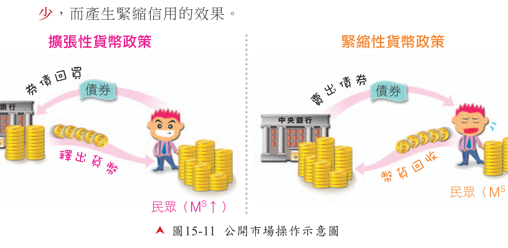
▲ 圖 15-11 公開市場操作示意圖：買回債券 ➔ 釋出貨幣（擴張）；賣出債券 ➔ 收回貨幣（緊縮）
三、央行次要貨幣政策工具（質的管制 / 選擇性信用管制）
- 選擇性信用管制：針對特定產業或部門設定貸款成數上限與寬限期（如房市管制、打炒房限制第二戶房貸成數）。
- 道德勸說（Moral Suasion）：央行總裁邀請銀行董事長座談「喝咖啡」，以行政指導勸告配合國家政策，屬心理暗示與柔性工具。
⑦ 15-6 我國金融體系與金融控股公司架構
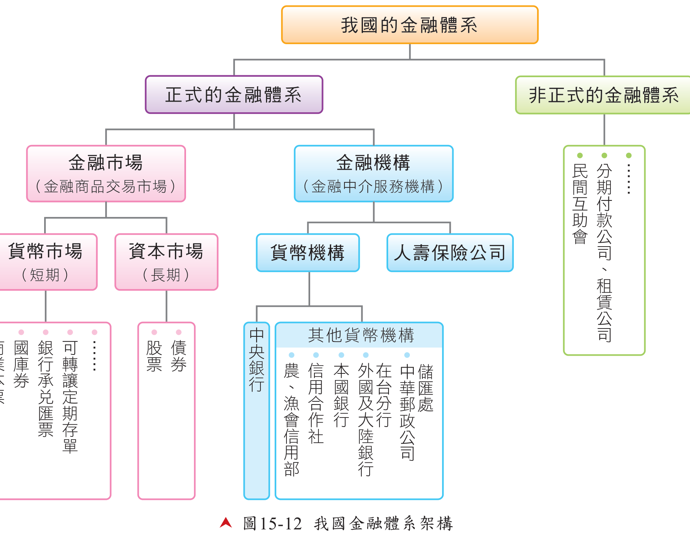
▲ 圖 15-12 我國金融體系架構：正式金融體系（金融市場 ＋ 金融機構）與非正式金融體系
一、金融市場二分法（貨幣市場 vs 資本市場）
| 分類標準 | 貨幣市場（Money Market） | 資本市場（Capital Market） |
|---|---|---|
| 融通信用期限 | 一年以下（短期資金融通） | 一年以上（中長期資本籌措） |
| 主要交易工具 | 國庫券（Treasury Bills）、商業本票（CP）、銀行承兌匯票（BA）、可轉讓定期存單（NCD） | 股票（普通股/特別股）、公司債、政府建設公債、金融債券 |
| 主要經濟功能 | 調度企業與銀行臨時性營運周轉資金 | 提供企業擴建新廠房、購置大型機器長期融資 |
二、金融控股公司（金控公司）與主管機關
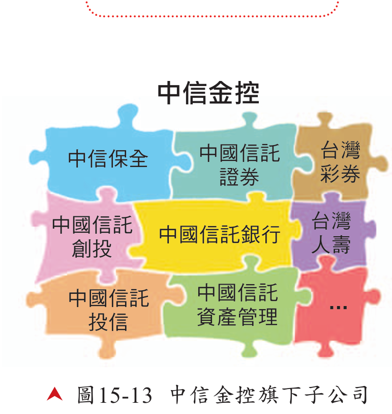
▲ 圖 15-13 中信金控跨業整併旗下銀行、證券、人壽、產險、投信等子公司
📌 金融控股公司（Financial Holding Company）：
指依《金融控股公司法》設立，對一銀行、保險公司或證券商有控制性持股之母公司。金控公司本身不直接面對顧客承作業務，而是透過旗下子公司達成跨業經營、發揮綜效（One-Stop Shopping）。
👉 主管機關：負責監理金融控股公司及金融市場的最高行政機關為行政院金融監督管理委員會（金管會）！
指依《金融控股公司法》設立，對一銀行、保險公司或證券商有控制性持股之母公司。金控公司本身不直接面對顧客承作業務，而是透過旗下子公司達成跨業經營、發揮綜效（One-Stop Shopping）。
👉 主管機關：負責監理金融控股公司及金融市場的最高行政機關為行政院金融監督管理委員會（金管會）！
⑧ 課本原題即測即評 (8 題精選互動測驗)
嚴選課本課後習題與綜合情境題，點擊選項立即獲得即時評分、詳盡解析與統測避坑提示：
1. 下列有關我國貨幣供給量統計之敘述，何者「不屬於」準貨幣（Quasi-Money）？
2. 歷史上當市場同時流通兩種面額相同但實際金屬成色價值不同之鑄幣時，所產生「劣幣驅逐良幣」之經濟現象，稱為：
3. 凱因斯認為，當市場利率降到極低，使得貨幣市場進入「流動性陷阱」階段時，下列敘述何者正確？
4. 根據費雪現金交易方程式 MV ＝ PT，在短期貨幣流通速度 V 與交易量 T 固定下，若央行將貨幣供給量 M 增加一倍，將直接導致：
5. 假設金燕姐姐將演出酬勞現金 100 萬元存入銀行作為原始存款。若法定存款準備率為 20%，在無現金流失且無超額準備假設下，全體銀行體系最多可創造出多少「存款貨幣總額」與「引申存款」？
6. 中央銀行在日常執行貨幣政策時，具備彈性大、可微調且「最常採用」的公開政策工具為：
7. 當景氣面臨嚴重低迷、失業率攀升時，中央銀行若欲實施「擴張性貨幣政策」，應採取下列何種組合策略？
8. 依交易商品的信用期限劃分，下列各項金融資產中，何者屬於「資本市場（Capital Market）」的交易工具？